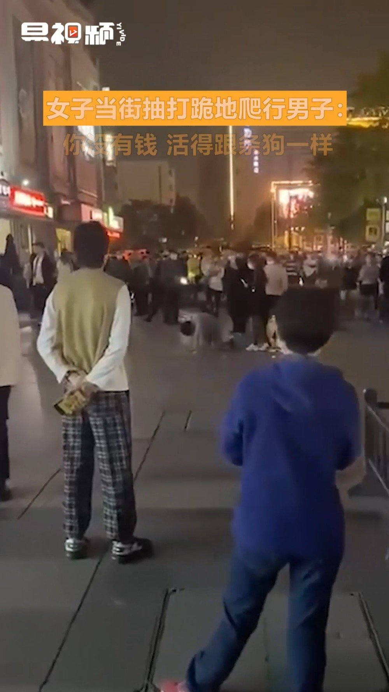
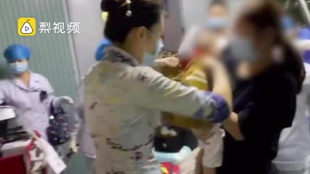

#微博会员锦鲤召集令# 会员大放价，好礼抽不停！我已抽中40元代金券，更有免单、大额代金券、超萌周边等好礼等你来拿！别忘了还有5折会员、买1赠1等超多开通优惠限时开启哦~快来参与鸭！会员5折购，锦鲤就是你！
@网易财经:【#女子鞭抽跪地爬行男友# 怒骂：你没钱 活得像条狗】11月5日晚，网曝河南郑州某广场前一女子当街鞭抽跪地爬行男友，边抽边骂：“你没有钱，活得像条狗一样。”此举引来路人围观，不少市民上前站在1米距离内录像，但无人劝阻该女子。从视频中还可以看出旁边还有一男子牵着一条狗围观，戏剧性十足。 大家怎么看（来源@易视频 ）易视频的微博视频 31万次播放 00:28
目前150医药4个多点仓位，加养老部分7个点；S医药2个多点仓位，加养老4个点。持仓部分收益率在55%-75%网格还没开。即使重大利空兑现，风险依然可控，甚至还要加仓。看看市场给不给机会将之前卖出的再买回来。只要你的成本低，就没人能打败你。
一岁孩子吃什么葡萄干！服了。@新浪视频:【1岁幼儿飞机上被葡萄干噎住，空姐用海姆立克法施救】#幼童被葡萄干卡喉咙空姐跪地急救# 11月3日，西安飞广州的航班上，一岁多幼儿抽搐脸色苍白，家长求助称以前没这种情况。空姐张华英想起，迎客时看见家长带着葡萄干，猜想孩子被噎住，立刻用海姆立克急救法施救，随后孩子吐出葡萄干转危为安。@一手Video 一手Video的秒拍视频 42万次播放 01:26
 会员5折购，锦鲤就是你！
会员5折购，锦鲤就是你！